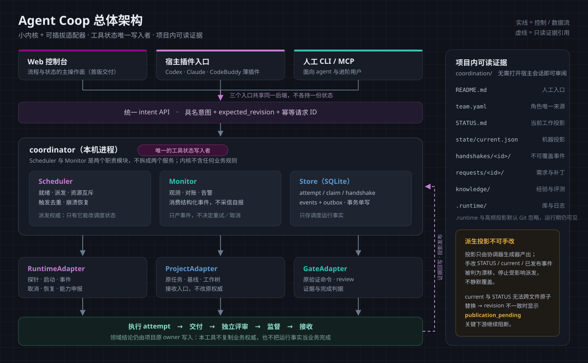
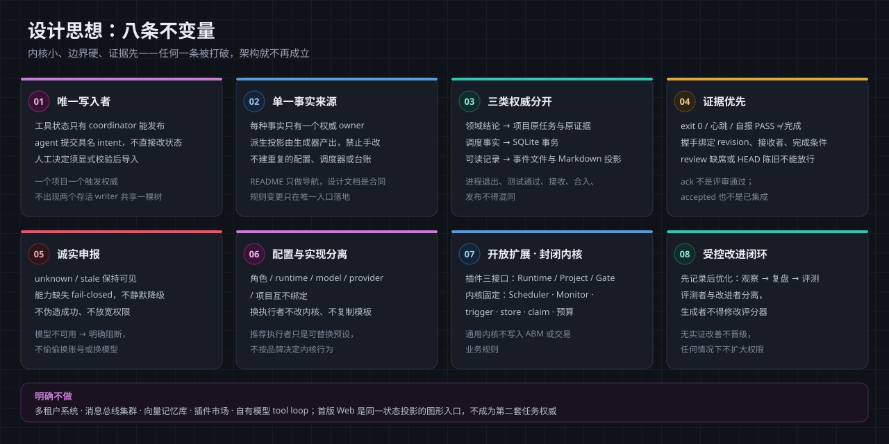
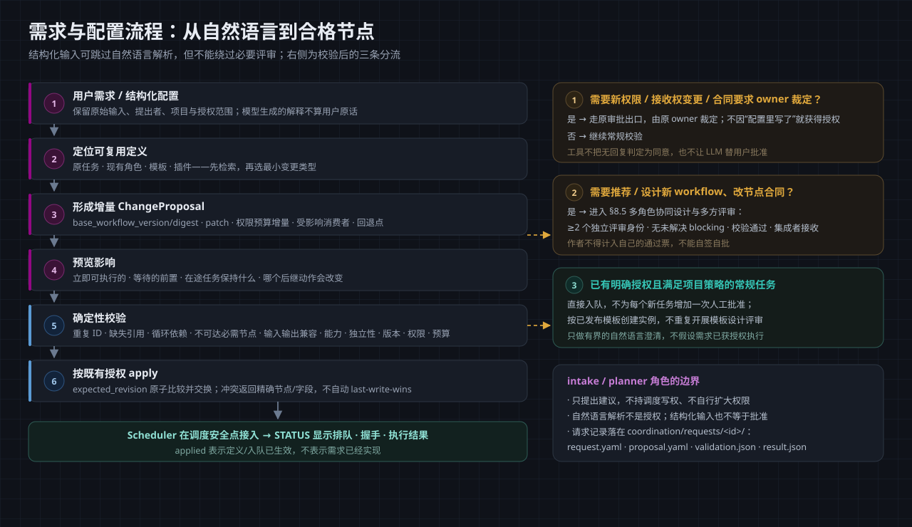
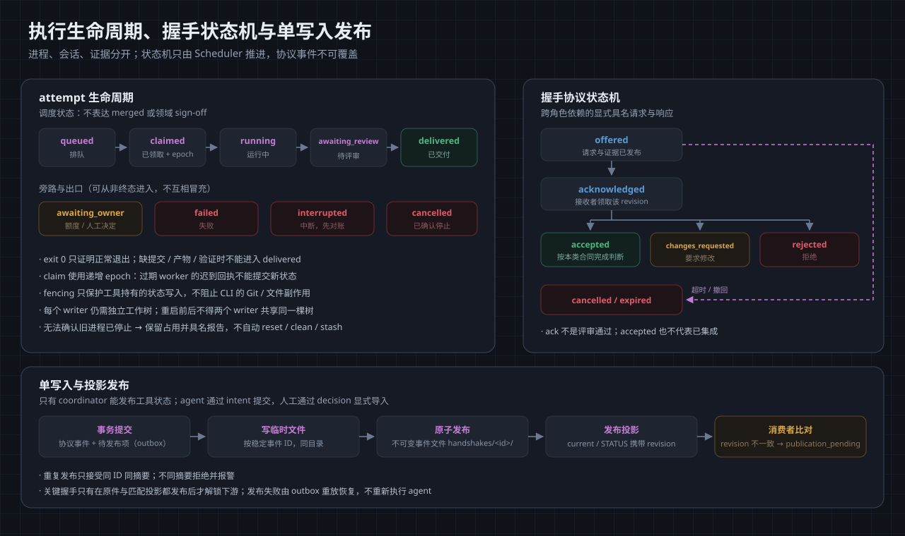
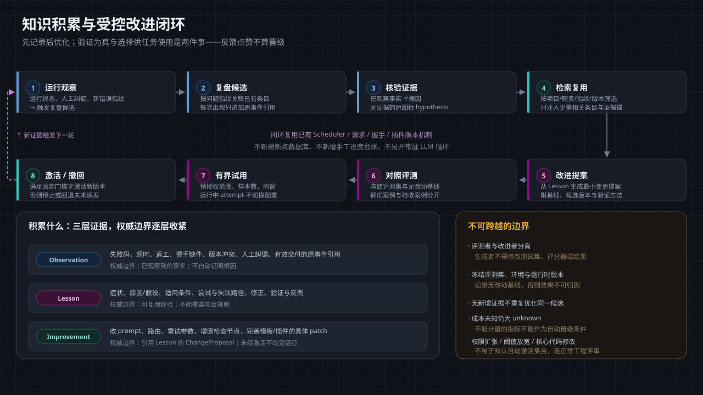

把设计文档中的架构、思想与流程画成可独立审阅的图；图是辅助，文字合同仍是唯一规范来源。
建议按 1 → 5 的顺序阅读：先看清「什么东西、谁说话算数」，再看「凭什么这么设计」，最后看「需求、执行、知识三条流程如何走」。
这张图回答：系统由哪些部分组成？谁有权写状态？项目里到底留下什么可审阅的东西？
01-architecture-overview.svg

coordination/ 是人工阅读入口；派生投影（STATUS、current.json）只由生成器产出，手改判为漂移。这张图回答：这套设计靠哪些不变量站得住？评审时按哪八条去反驳？
02-design-principles.svg

这张图回答：用户说一句话之后，系统凭什么保证它没被曲解、没被越权、真正进了队列？
03-request-to-dispatch.svg

这张图回答：任务状态怎么流转？跨角色怎么交接？状态文件是怎么被“只写一次”地发布出去的？
04-execution-and-handshake.svg

publication_pending。这张图回答：踩过的坑怎么沉淀？什么时候允许它改变系统行为？
05-knowledge-loop.svg
